五子剑系列讲座之九【五子棋中级寒星】
首页
五子棋教室
#1 五子剑系列讲座之九【五子棋中级寒星】 作者：有志青年 发表时间：2007-12-6 14:46:47
注：五子剑五子棋系列讲座教程出自掌棋盟论坛，版权归原作者本人及掌棋盟论坛所有，未经许可，请勿私自转载。爱五子棋网站已获授权。
下棋这几年，飘飘零零的真正踏实在下棋的时间并不多，利用空闲的几天写下个人的一些经
验，希望可以对棋友有所帮助！
我认为下棋最重要的是态度和方法，你对五子棋的热爱程度以及学棋时所用的方法是提高
的关键！
阅读的顺序为：
五子棋入门→五子棋基础知识→
五子棋初级→五子棋初级花月→五子棋初级蒲月→五子棋初级习题→
五子棋中级→五子棋中级云雨月→五子棋中级寒星→五子棋中级银月→五子棋中级习题→
五子棋ＶＣＦ习题集→五子棋高级
所有截图画面是ＬＩＢ、五子妙手３.０、ＱＱ游戏五子棋单机版能有如此多的人爱好
五子棋是最令人高兴的事，如此多的人为了同一种游戏来交流甚至痴迷！
感谢所有下五子棋的朋友，祝大家笑口常开、一生平安！
棋友：五子剑
#2 Re:五子棋中级寒星 作者：有志青年 发表时间：2007-12-6 15:19:19
#3 Re:五子棋中级寒星 作者：有志青年 发表时间：2007-12-6 15:23:05
| 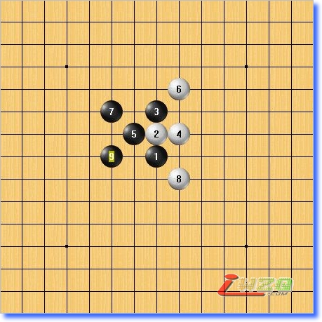 | 先看看寒星的燕阵！
这样的通型在浦月中已经出现过！
黑棋选择纯进攻的走法，白棋反攻力量极为强大，黑棋在牢控先手的情况下进行攻击！ |
#4 Re:五子棋中级寒星 作者：有志青年 发表时间：2007-12-6 15:26:06
 | 10手冲四进行交换最强，下面留两个眠三，对黑牵制很大！同时请注意10手的方向，向空间大的方向，这个已经强调多次了 |
#5 Re:五子棋中级寒星 作者：有志青年 发表时间：2007-12-6 15:27:29
| 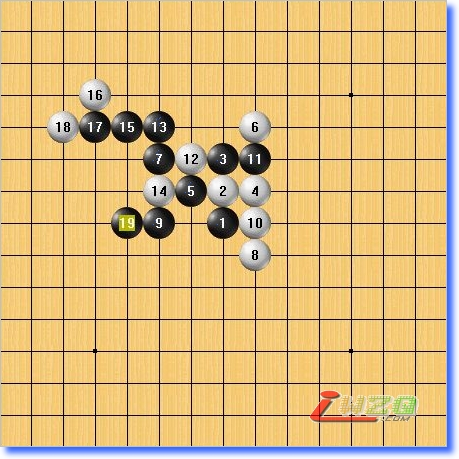 | 黑左边先手活三再做杀，这种走法我们在花月中学习过！ |
#6 Re:五子棋中级寒星 作者：有志青年 发表时间：2007-12-6 15:28:02
| 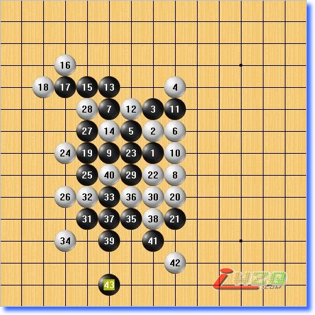 | 白棋借助右边子力防守是强的走法。
这里黑棋VCF杀！ |
#7 Re:五子棋中级寒星 作者：有志青年 发表时间：2007-12-6 15:28:56
| 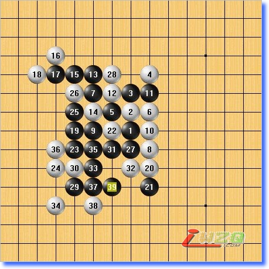 | 这里是白的最强防守，请注意黑25、27手，这是保留优势的后中先走法，也是我们下棋必须掌握的技巧。 |
#8 Re:五子棋中级寒星 作者：有志青年 发表时间：2007-12-6 15:29:30
#9 Re:五子棋中级寒星 作者：有志青年 发表时间：2007-12-6 15:31:59
| 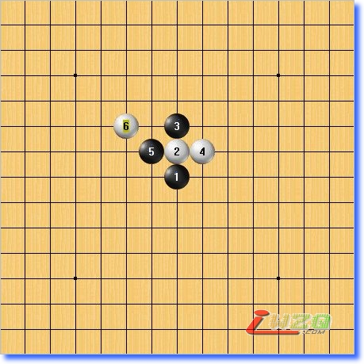 | 6手是这里最强防！ 6手之所以选择防守在黑空间较少的上面，是因为后盘黑主要的进攻力量是在和6手相同的方向。 |
#10 Re:五子棋中级寒星 作者：有志青年 发表时间：2007-12-6 15:32:31
| 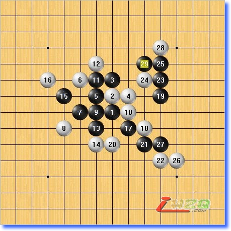 | 这个变化是寒星白最强的变化！
黑一直到后盘才最终走出去生的优势！
这里黑棋先手的思路非常好，该攻的地方攻，该做棋的地方做棋，值得学习！同时白的防守也相当顽强 。 |
#11 Re:五子棋中级寒星 作者：有志青年 发表时间：2007-12-6 15:33:01
| 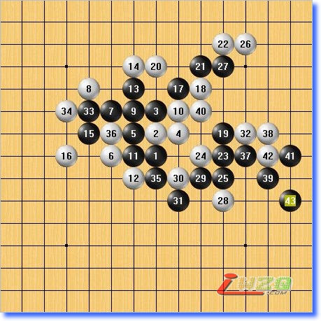 | 这个6手，是挡下面的变化，黑杀起来则比刚才轻松许多！ |
#12 Re:五子棋中级寒星 作者：有志青年 发表时间：2007-12-6 15:36:57
| 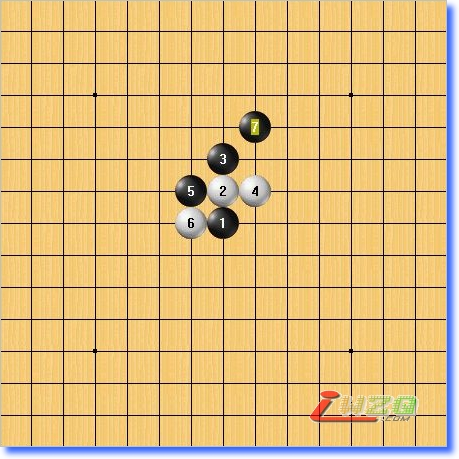 | 6手选择切断黑的两条线路，这种防守在云月里已经看到过！
7手向上活三，拓展空间！ |
#13 Re:五子棋中级寒星 作者：有志青年 发表时间：2007-12-6 15:38:57
#14 Re:五子棋中级寒星 作者：有志青年 发表时间：2007-12-6 15:41:05
| 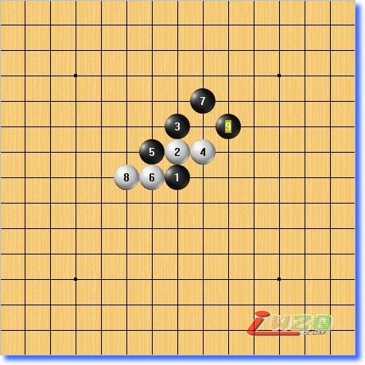 | 8手下防，黑则在上面拓展，同时牵制住白的二！ |
#15 Re:五子棋中级寒星 作者：有志青年 发表时间：2007-12-6 15:43:43
现在我们换个４手来看，如下图：
| 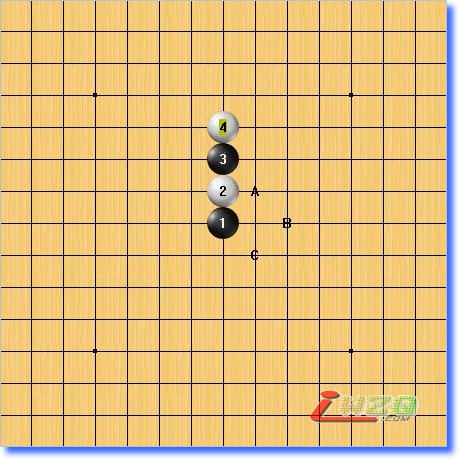 | 4手一般出现在初学者身上，感觉很好玩的样子，但防守力量弱，黑在A,B,C三点都可以 |
#16 Re:五子棋中级寒星 作者：有志青年 发表时间：2007-12-6 15:44:37
| 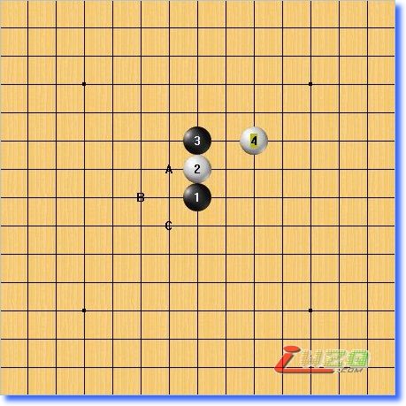 | 4手右跳马步，但是左边空了，黑在A,B,C三点都可以轻松杀！ |
#17 Re:五子棋中级寒星 作者：有志青年 发表时间：2007-12-6 15:45:05
#18 Re:五子棋中级寒星 作者：有志青年 发表时间：2007-12-6 15:45:41
#19 Re:五子棋中级寒星 作者：有志青年 发表时间：2007-12-6 15:48:24
刚才看的几个４手都相对比较弱，现在看看另一个比较强的４手点，如下图：
#20 Re:五子棋中级寒星 作者：有志青年 发表时间：2007-12-6 15:48:54
#21 Re:五子棋中级寒星 作者：有志青年 发表时间：2007-12-6 15:49:28
#22 Re:五子棋中级寒星 作者：有志青年 发表时间：2007-12-6 15:49:59
#23 Re:五子棋中级寒星 作者：有志青年 发表时间：2007-12-6 15:50:39
#24 Re:五子棋中级寒星 作者：有志青年 发表时间：2007-12-6 15:53:28
现在来看寒星另一个打点，如下图：
| 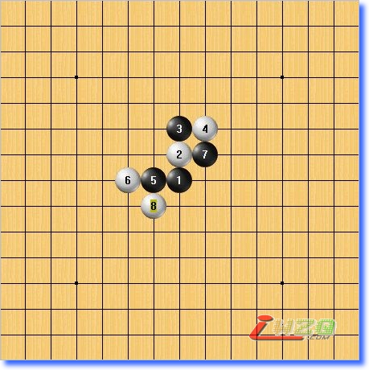 | 6手左防后，如果7手这里成双二，则白在8手位置防守后黑难杀！ |
#25 Re:五子棋中级寒星 作者：有志青年 发表时间：2007-12-6 15:54:32
| 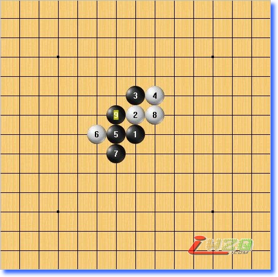 | 7手应该向下做棋，抢先占领要点！8手下这里黑可以简单VCT! |
#26 Re:五子棋中级寒星 作者：有志青年 发表时间：2007-12-6 15:55:03
#27 Re:五子棋中级寒星 作者：有志青年 发表时间：2007-12-6 15:55:39
| 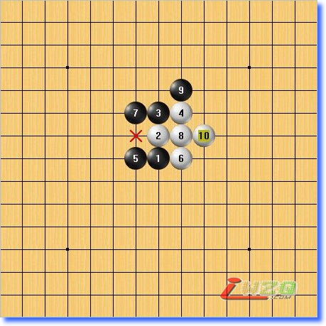 | 6手成双二，黑7手不可防这里，否则简单被抓禁手！ |
#28 Re:五子棋中级寒星 作者：有志青年 发表时间：2007-12-6 15:56:09
#29 Re:五子棋中级寒星 作者：有志青年 发表时间：2007-12-6 15:56:41
| 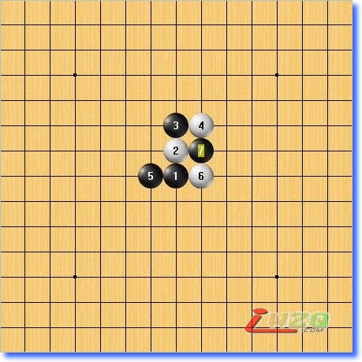 | 正确的7手应该是在这里穿一手，黑这种棋型的最强走法！ 寒星进攻是线路连接性很强，适合仔细拆解！ |
#30 Re:五子剑系列讲座之九【五子棋中级寒星】 作者：啊呆 发表时间：2009-12-10 15:25:31
这个不是基本照搬把五子棋选点诀窍一书么
#31 Re:五子剑系列讲座之九【五子棋中级寒星】 作者：我是来学习五子棋的 发表时间：2010-7-16 10:51:47
老师的第10贴有个小错误，25手后白棋26手没有档，貌似不是禁手
#32 Re:五子剑系列讲座之九【五子棋中级寒星】 作者：巫山云雨 发表时间：2010-9-29 9:51:45
呵呵不错不错学习了
#33 Re:五子剑系列讲座之九【五子棋中级寒星】 作者：新手李棋 发表时间：2011-12-13 22:30:36
在学习中，自打一谱，望高手多多指点。
#34 Re:五子剑系列讲座之九【五子棋中级寒星】 作者：新手李棋 发表时间：2011-12-13 22:46:04
向各位请教，黑棋如何正确应对？
#35 Re:五子剑系列讲座之九【五子棋中级寒星】 作者：新手李棋 发表时间：2011-12-13 23:01:53
上谱白10挡下i7的自打谱
［此帖子已被 新手李棋 在 2011-12-13 23:03:46 编辑过］